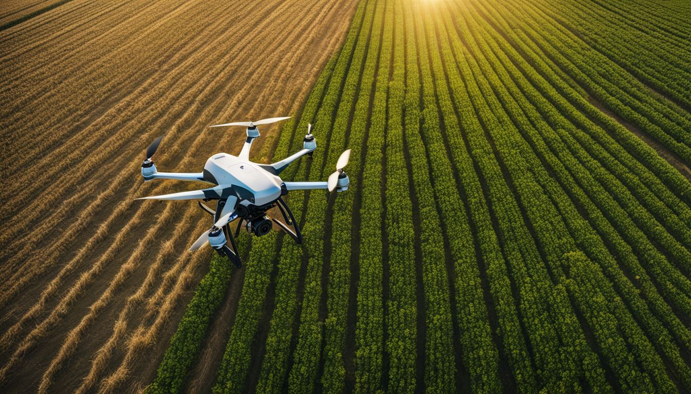

-
Precision Agriculture
Precision agriculture involves using technology to monitor and optimize crop growth. It includes GPS-guided equipment, drones, and sensors that help farmers make data-driven decisions to improve yield and reduce waste. This technique can also help farmers detect and address issues such as soil moisture levels, nutrient deficiencies, and pest infestations early on, reducing the need for pesticides and other chemicals. Precision agriculture can also help farmers optimize crop yields by analyzing weather patterns, soil types, and crop varieties, allowing for more efficient use of resources.
Learn More -
Vertical Farming

Vertical farming is a method of growing crops in vertically stacked layers, often in controlled indoor environments. This technique allows for year-round production, efficient use of space, and reduced water usage. By growing crops in vertically stacked layers, vertical farming can increase crop yields by up to 30 times compared to traditional farming methods, while also reducing land use and environmental impact. Additionally, vertical farming can provide a stable and consistent food supply, regardless of weather conditions or seasonal fluctuations.
Learn More -
Hydroponics

Hydroponics is a soil-less farming method where plants grow in nutrient-rich water. This system allows for faster growth, higher yields, and the ability to grow crops in areas with poor soil quality. Hydroponics also reduces the risk of soil-borne diseases and pests, as well as the need for pesticides and other chemicals. Hydroponic systems can be designed to recycle water and nutrients, making it a more water-efficient method compared to traditional farming. Additionally, hydroponics can be used to grow a wide variety of crops, including leafy greens, fruits, and vegetables.
Learn More -
Organic Farming

Organic farming emphasizes the use of natural inputs and processes to grow crops. This method avoids synthetic chemicals, promoting biodiversity, soil health, and environmental sustainability. Organic farming can also increase the nutritional value of crops by up to 50% compared to conventional farming methods. Organic farming practices include crop rotation, composting, and the use of natural pest control methods, which can help maintain ecosystem balance and reduce the environmental impact of farming.
Learn More -
Smart Irrigation

Smart irrigation systems use technology to optimize water use for crops. These systems can include sensors, weather data, and automated controls to ensure that crops receive the right amount of water at the right time. Smart irrigation systems can help farmers conserve water, reduce costs, and improve crop yields. By using data-driven insights to manage irrigation, farmers can also minimize water waste and ensure that crops receive adequate hydration, even during periods of drought or irregular weather conditions.
Learn More